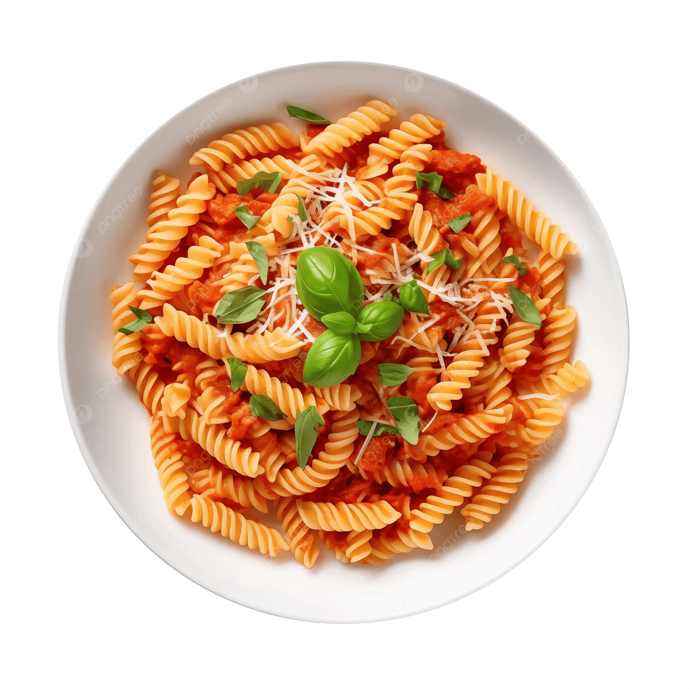

Odin Recipes
Pasta Recipe

Description
Pasta is a versatile Italian dish made from wheat flour and water, typically served with a variety of sauces and toppings. It's a staple food in many cultures and can be enjoyed in countless ways.
Ingredients
- Pasta (spaghetti, penne, or your choice)
- Ground beef
- Marinara sauce
- Ricotta cheese
- Shredded mozzarella cheese
- Parmesan cheese
- Egg
- Italian seasoning
- Salt and pepper
Steps
- Bring a large pot of salted water to a boil. Cook the pasta according to package instructions until al dente. Drain and set aside.
- In a large skillet, cook the ground beef over medium heat until browned. Drain excess fat.
- Add marinara sauce to the skillet and simmer for 10 minutes.
- In a mixing bowl, combine ricotta cheese, egg, Italian seasoning, salt, and pepper.
- In a large baking dish, layer the cooked pasta, meat sauce, ricotta mixture, mozzarella, and Parmesan cheese. Repeat layers as desired.
- Cover with foil and bake in a preheated oven at 375°F (190°C) for 25 minutes. Remove foil and bake for an additional 15 minutes until cheese is bubbly and golden.
- Let it cool for a few minutes before serving. Enjoy your delicious pasta!